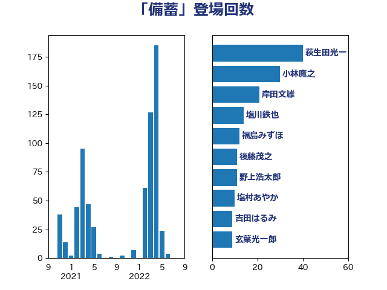

単語「備蓄」

| 萩生田光一 | 自由民主党 | 40 回 |
| 小林鷹之 | 自由民主党 | 30 回 |
| 岸田文雄 | 自由民主党 | 21 回 |
| 塩川鉄也 | 日本共産党 | 14 回 |
| 福島みずほ | 社会民主党 | 12 回 |
| 後藤茂之 | 自由民主党 | 11 回 |
| 野上浩太郎 | 自由民主党 | 11 回 |
| 塩村あやか | 立憲民主党 | 10 回 |
| 吉田はるみ | 立憲民主党 | 9 回 |
| 玄葉光一郎 | 立憲民主党 | 9 回 |
| 自見はなこ | 自由民主党 | 9 回 |
| 伊藤孝江 | 公明党 | 8 回 |
| 山岡達丸 | 立憲民主党 | 8 回 |
| 福重隆浩 | 公明党 | 8 回 |
| 本庄知史 | 立憲民主党 | 7 回 |
| 細田健一 | 自由民主党 | 7 回 |
| 田村貴昭 | 日本共産党 | 6 回 |
| 高木かおり | 日本維新の会 | 6 回 |
| 古川元久 | 国民民主党 | 5 回 |
| 小山展弘 | 立憲民主党 | 5 回 |
| 東徹 | 日本維新の会 | 5 回 |
| 浅野哲 | 国民民主党 | 5 回 |
| 清水貴之 | 日本維新の会 | 5 回 |
| 竹谷とし子 | 公明党 | 5 回 |
| 赤羽一嘉 | 公明党 | 5 回 |
| 井上信治 | 自由民主党 | 4 回 |
| 川田龍平 | 立憲民主党 | 4 回 |
| 末松義規 | 立憲民主党 | 4 回 |
| 本田顕子 | 自由民主党 | 4 回 |
| 梅村聡 | 日本維新の会 | 4 回 |
| 梶山弘志 | 自由民主党 | 4 回 |
| 河野義博 | 公明党 | 4 回 |
| 田名部匡代 | 立憲民主党 | 4 回 |
| 鈴木敦 | 国民民主党 | 4 回 |
| 一谷勇一郎 | 日本維新の会 | 3 回 |
| 吉川ゆうみ | 自由民主党 | 3 回 |
| 城井崇 | 立憲民主党 | 3 回 |
| 宮本徹 | 日本共産党 | 3 回 |
| 小泉進次郎 | 自由民主党 | 3 回 |
| 山田俊男 | 自由民主党 | 3 回 |
| 平木大作 | 公明党 | 3 回 |
| 石井苗子 | 日本維新の会 | 3 回 |
| 秋本真利 | 自由民主党 | 3 回 |
| 美延映夫 | 日本維新の会 | 3 回 |
| 青山繁晴 | 自由民主党 | 3 回 |
| こやり隆史 | 自由民主党 | 2 回 |
| 中村裕之 | 自由民主党 | 2 回 |
| 井上哲士 | 日本共産党 | 2 回 |
| 伊佐進一 | 公明党 | 2 回 |
| 吉良州司 | 無所属 | 2 回 |
| 大串博志 | 立憲民主党 | 2 回 |
| 小寺裕雄 | 自由民主党 | 2 回 |
| 岸真紀子 | 立憲民主党 | 2 回 |
| 杉尾秀哉 | 立憲民主党 | 2 回 |
| 梅谷守 | 立憲民主党 | 2 回 |
| 武部新 | 自由民主党 | 2 回 |
| 江島潔 | 自由民主党 | 2 回 |
| 片山大介 | 日本維新の会 | 2 回 |
| 田村まみ | 国民民主党 | 2 回 |
| 白石洋一 | 立憲民主党 | 2 回 |
| 神谷裕 | 立憲民主党 | 2 回 |
| 菅義偉 | 自由民主党 | 2 回 |
| 葉梨康弘 | 自由民主党 | 2 回 |
| 逢坂誠二 | 立憲民主党 | 2 回 |
| 長谷川淳二 | 自由民主党 | 2 回 |
| 高橋光男 | 公明党 | 2 回 |
| 高橋千鶴子 | 日本共産党 | 2 回 |
| 世耕弘成 | 自由民主党 | 1 回 |
| 中川郁子 | 自由民主党 | 1 回 |
| 伊東信久 | 日本維新の会 | 1 回 |
| 住吉寛紀 | 日本維新の会 | 1 回 |
| 倉林明子 | 日本共産党 | 1 回 |
| 北神圭朗 | 無所属 | 1 回 |
| 大西健介 | 立憲民主党 | 1 回 |
| 大西英男 | 自由民主党 | 1 回 |
| 大野敬太郎 | 自由民主党 | 1 回 |
| 太田房江 | 自由民主党 | 1 回 |
| 宮崎雅夫 | 自由民主党 | 1 回 |
| 小野泰輔 | 日本維新の会 | 1 回 |
| 山岸一生 | 立憲民主党 | 1 回 |
| 山本博司 | 公明党 | 1 回 |
| 山田美樹 | 自由民主党 | 1 回 |
| 山際大志郎 | 自由民主党 | 1 回 |
| 川合孝典 | 国民民主党 | 1 回 |
| 朝日健太郎 | 自由民主党 | 1 回 |
| 木村次郎 | 自由民主党 | 1 回 |
| 柿沢未途 | 無所属 | 1 回 |
| 櫛渕万里 | れいわ新選組 | 1 回 |
| 浜口誠 | 国民民主党 | 1 回 |
| 滝波宏文 | 自由民主党 | 1 回 |
| 熊谷裕人 | 立憲民主党 | 1 回 |
| 田村憲久 | 自由民主党 | 1 回 |
| 石井啓一 | 公明党 | 1 回 |
| 石井正弘 | 自由民主党 | 1 回 |
| 稲田朋美 | 自由民主党 | 1 回 |
| 緑川貴士 | 立憲民主党 | 1 回 |
| 羽生田俊 | 自由民主党 | 1 回 |
| 若宮健嗣 | 自由民主党 | 1 回 |
| 藤木眞也 | 自由民主党 | 1 回 |
| 西田実仁 | 公明党 | 1 回 |
| 西銘恒三郎 | 自由民主党 | 1 回 |
| 谷合正明 | 公明党 | 1 回 |
| 野田国義 | 立憲民主党 | 1 回 |
| 金子恭之 | 自由民主党 | 1 回 |
| 鈴木義弘 | 国民民主党 | 1 回 |
| 鈴木貴子 | 自由民主党 | 1 回 |
| 高木啓 | 自由民主党 | 1 回 |